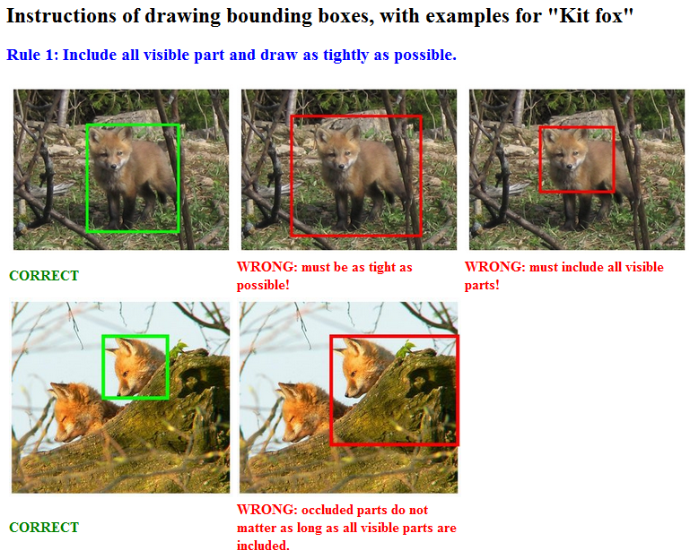
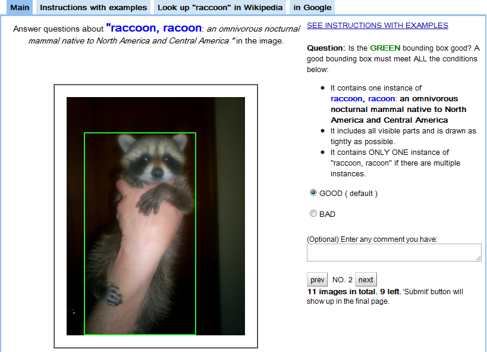
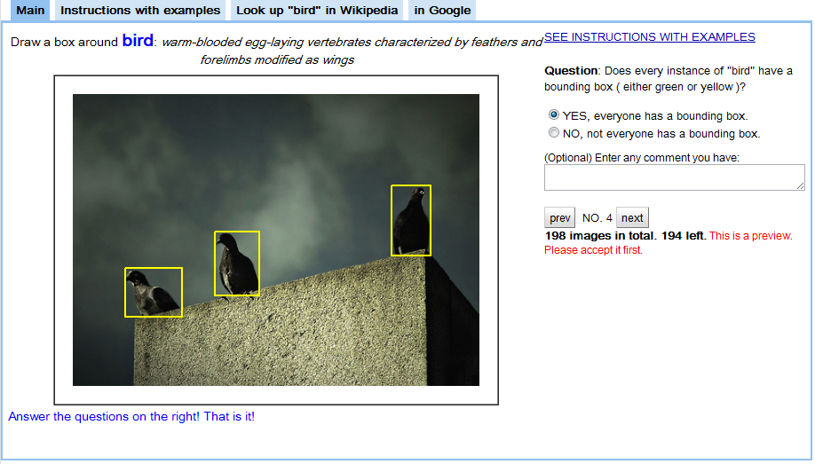

ImageNet 標註簡報
Crowdsourcing 的智慧結晶：高效三重驗證法

引言：為何需要 ImageNet？
在電腦視覺領域，ImageNet 就像是巨人的肩膀，它為深度學習模型的訓練提供了超過 1,500 萬張帶有標註的圖片。但問題來了... 這麼龐大的資料集，是怎麼被「手動」標註出來的呢？
這是一個浩大的工程，其中最大的挑戰就是如何在確保品質的同時，控制成本。
傳統眾包的困境
想像一下，如果我們用傳統方法，讓幾個人分別去標註一張圖，再取他們的平均結果，會發生什麼？
- 耗時：每個人都要從頭開始畫框。
- 不精確：每個人畫的框大小、位置都略有不同，導致結果有偏差。
- 成本高：重複的繪製工作增加了不必要的開銷。
ImageNet 團隊意識到，繪製邊界框是個困難且耗時的任務，而驗證它則相對簡單。
三重驗證流程：第一步
繪製任務 (Drawing Task)
第一位眾包工作者根據指示，在圖像中為指定物件繪製一個緊密的邊界框。這需要時間和專注力。(來源:Su et al., 2012)

三重驗證流程：第二步
品質驗證 (Quality Verification)
第二位工作者審核前一步的邊界框，並回答一個簡單的是非題：「這個框是否正確地圈選了一個物件？」

三重驗證流程：第三步
覆蓋率驗證 (Coverage Verification)
第三位工作者審核整個圖像，確認是否所有同類物件都已被標註。同樣，只需回答是非題。

成本效益分析
這套系統帶來了驚人的效益，因為**驗證任務（是非題）遠比繪製任務（畫框）簡單、快速且便宜**，大幅降低了整體標註成本。
- 更高的準確性與召回率：確保了數據的品質。
- 極低的成本：將大部分「昂貴」的繪圖工作，替換成了「便宜」的驗證工作。
總結：改變世界的影響
ImageNet 的成功，不僅在於數據集本身，更在於其催生了新的技術突破。
ImageNet 大規模視覺識別挑戰賽 (ILSVRC) 成為了電腦視覺領域的奧運會。
在 2012 年，AlexNet 橫空出世，以驚人的成績贏得 ILSVRC 冠軍，從此引爆了深度學習的浪潮。
這一切，都始於 ImageNet 團隊在資料標註流程上的巧妙創新。
1 / 9